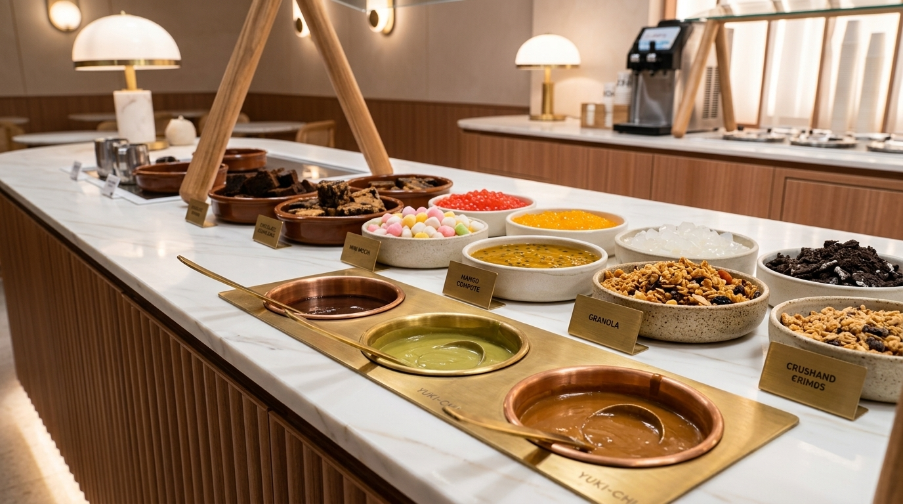

A true recreation of Yo-Chi's signature self-serve setup: heated brass sauce wells, gourmet baked bites, and house-made mochis.
Marble countertop featuring heated brass pots for melted Pistachio Cream & Biscoff drizzle, ceramic bowls of Japanese Mini Mochis, Chocolate Fudge Brownies, Cookie Cake Cubes, and Fruit Compotes.

No messy plastic squeeze bottles. Continuous gentle bain-marie warming maintains silky flow for 100% Italian Pistachio Drizzle, Melted Biscoff, and Belgian Milk Chocolate.
Bite-sized Chocolate Fudge Brownies, Chocolate Chunk Cookie Cake cubes, and crispy wafer rolls for rich dessert layering.
Soft and chewy bite-sized mochis alongside Passionfruit Compote, Mango popping pearls, Nata De Coco, and Mixed Berry coulis.